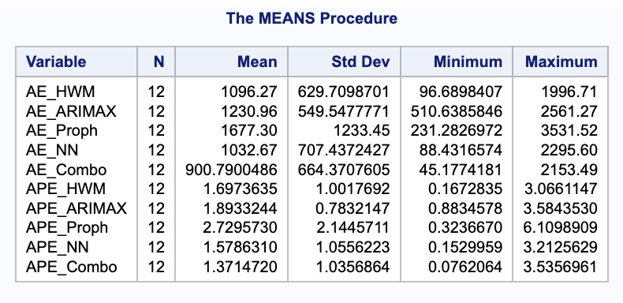
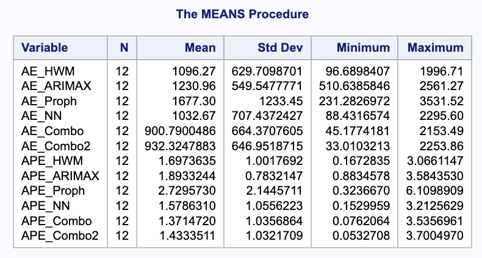
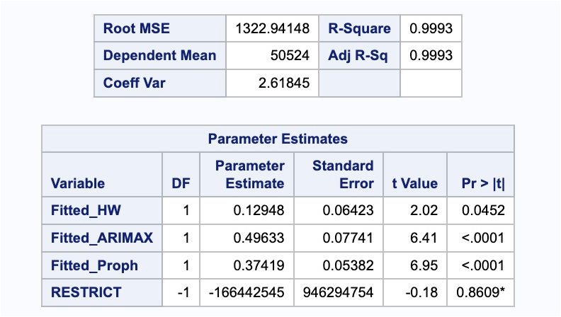
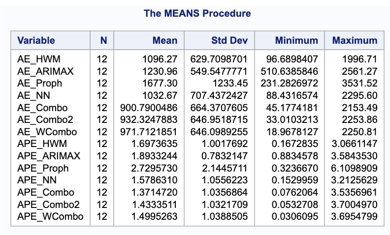

Chapter 9 Weighted and combined forecasts
The thought process around weighted and combined forecasting (also called composite forecasting) is not new. The topic has been studied for years, and empirical evidence indicates that the combination of forecast methods tends to outperform most single forecast methods.
It is better to average forecasts in hope that by so doing, the biases among the methods and/or forecasters will compensate for one another. As a result, forecasts developed using different methods are expected to be more useful in cases of high uncertainty. The method is especially relevant for long-range forecasting, where uncertainty is extremely high. Many different studies have been done to show the value of combining forecasts.
There are two basic weighting methods:
Simple Averaging of Forecasts
Weighted Methods Based on some metric (for example, error)
9.1 Simple Average
The simple averaging approach is just as easy as it sounds. It takes the average of the forecasted values from each of the models being combined:
\[ Combined = \frac{1}{m} \sum_{i=1}^m FM_i \]
where m is the number of forecasting methods and FM is an individual method used to forecast. Although this method is rather simple, it is still hard to beat in terms of ensemble methods.
Let’s see how to do this in each of our softwares!
9.1.1 R
The model function framework in R makes composite forecasting rather easy. For our dataset we have a point intervention at September, 2001. We can easily create a binary variable that takes a value of 1 during that month and 0 otherwise. This variable can be added to the formula structure of the models that allow external variables. Let’s build our best Holt-Winters exponential smoothing model, best seasonal ARIMAX model, and best Prophet model to combine together. In the model function we can put all three of these models in with the ETS, ARIMA, and prophet functions respectively. We name each of these models for easy viewing in the output. The options we used for each of these models are discussed in the previous sections where we introduced the models.
Once the models are complete, we just use the mutate function to blend the results into a new forecast called combo which is just the simple average of the three models in the model function.
## Warning: package 'fable.prophet' was built under R version 4.5.2## Loading required package: Rcpplibrary(dplyr)
train<-train %>% mutate(Sep11 = if_else(date >= yearmonth("2000 Sep"),1,0))
model_all <- train %>%
model(
esm = ETS(Passengers ~ error("M") + trend("A") + season("M")),
arimax = ARIMA(Passengers ~ 1 + Sep11 + lag(Sep11) + lag(Sep11, 2) +
lag(Sep11, 3) + lag(Sep11, 12) + pdq(1,0,0) + PDQ(1,1,1)),
prophet = prophet(Passengers ~ Sep11 +
growth("linear") +
season(period = "year", order = 6, type = "multiplicative"))
) %>%
mutate(combo = (esm + arimax + prophet) / 3)That is all we need to do to combine our forecasts together. To evaluate these forecasts we need to take them to the test dataset. To forecast these values going forward, we need future values of our predictor variable. For this dataset, we have our Sep11 variable that we forecast to have values of 0 for each of the 12 observations we are forecasting for airline passengers. To do this we create another variable (of the same name) that has future values in our test dataset. We then use the forecast function with both the model and the test dataset as inputs. The forecast function will be expecting a test dataset that contains the Sep11 variable in it. Lastly, we plot the forecasts using the autoplot functionality.
test$Sep11 <- rep(1, 12)
model_all_for <- model_all %>%
fabletools::forecast(test)
library(RColorBrewer)
okabe_ito <- c(
"#E69F00", # orange
"#56B4E9", # sky blue
"#009E73", # bluish green
"#CC79A7" # reddish purple
)
scale_colour_manual(values = okabe_ito)## <ggproto object: Class ScaleDiscrete, Scale, gg>
## aesthetics: colour
## axis_order: function
## break_info: function
## break_positions: function
## breaks: waiver
## call: call
## clone: function
## dimension: function
## drop: TRUE
## expand: waiver
## get_breaks: function
## get_breaks_minor: function
## get_labels: function
## get_limits: function
## get_transformation: function
## guide: legend
## is_discrete: function
## is_empty: function
## labels: waiver
## limits: NULL
## make_sec_title: function
## make_title: function
## map: function
## map_df: function
## n.breaks.cache: NULL
## na.translate: TRUE
## na.value: grey50
## name: waiver
## palette: function
## palette.cache: NULL
## position: left
## range: environment
## rescale: function
## reset: function
## train: function
## train_df: function
## transform: function
## transform_df: function
## super: <ggproto object: Class ScaleDiscrete, Scale, gg>model_all_for %>%
as_tibble() %>%
select(date, .model, .mean) %>%
ggplot(aes(x = date, y = .mean, colour = .model)) +
geom_line() +
scale_colour_manual(values = okabe_ito) +
labs(y = "Airline Passengers",
title = "Comparison of Forecasts") +
geom_vline(xintercept = as_date("2007-03-15"),
color = "orange",
linetype = "longdash")
We can see above that the forecasts are all relatively similar to each other. However, the Prophet forecast seems a little higher than the rest. The combination forecast is in between that higher Prophet model and the ESM and seasonal ARIMAX models. Let’s use the accuracy function ranked by mean absolute percentage error (MAPE) using the arrange function to see if this average helps.
## # A tibble: 4 × 10
## .model .type ME RMSE MAE MPE MAPE MASE RMSSE ACF1
## <chr> <chr> <dbl> <dbl> <dbl> <dbl> <dbl> <dbl> <dbl> <dbl>
## 1 combo Test -207. 1130. 787. -0.350 1.23 NaN NaN 0.269
## 2 prophet Test -673. 1287. 921. -1.03 1.41 NaN NaN -0.0997
## 3 esm Test 581. 1209. 1100. 0.897 1.71 NaN NaN 0.156
## 4 arimax Test -512. 1594. 1239. -0.895 1.94 NaN NaN 0.558As we can see, the combined forecast far outperforms the other individual models in both mean absolute error (MAE) and MAPE. The only downside of the model function implementation is that the we cannot easily combine the autoregressive neural network forecast. This is only because our data was not stationary and we needed to take a difference before building the neural network. If our data was stationary, it would have been no problem to combine the neural network in the model function as well using the NNETAR function. However, taking an average ourselves is not too difficult.
First, we take the individual forecasts from the 3 previous models that we built using the filter function for the specific model. Next, we need to build the autoregressive neural network. We do this in the same way we did when we introduced the neural network models in a previous section. We also calculate the forecasts similarly to what was done previously. Lastly, we just combine these now 4 forecasts together with a simple average and calculate the MAE and MAPE by hand for this new, second combined forecast.
esm_for <- model_all_for %>% filter(.model == 'esm')
arima_for <- model_all_for %>% filter(.model == 'arimax')
prophet_for <- model_all_for %>% filter(.model == 'prophet')
set.seed(12345)
model_nnet <- train %>%
mutate(diff_Pass = difference(Passengers, 12)) %>%
model(NNETAR(diff_Pass ~ Sep11))
model_nnet_for <- fabletools::forecast(model_nnet, test)
nnet_for <- rep(NA, 12)
for(i in 1:12){
nnet_for[i] <- train$Passengers[length(train$Passengers) - 12 + i] + model_nnet_for$.mean[i]
}
combo2_for <- (esm_for$.mean + arima_for$.mean + prophet_for$.mean + nnet_for)/4
combo2_error <- test$Passengers - combo2_for
combo2_MAE <- mean(abs(combo2_error))
combo2_MAPE <- mean(abs(combo2_error)/abs(test$Passengers))*100
combo2_MAE## [1] 880.1812## [1] 1.37332Interestingly, as we see above, this combination of all 4 of the models is not as good in terms of MAE and MAPE as just the 3 models of the ESM, seasonal ARIMAX, and Prophet. Although the combination is better than any of the individual models, different combinations might be better than others.
9.1.2 Python
The StatsForecast function in Python makes composite forecasting rather easy since we can build so many models so quickly. For our dataset we have a point intervention at September, 2001. We can easily create a binary variable that takes a value of 1 during that month and 0 otherwise. By using the merge function on our training dataset we can add this new variable to our training data for models that can use it. Let’s build our best Holt-Winters exponential smoothing model, best seasonal ARIMAX, best Prophet model, and best autoregressive neural network model for combining together. We create these models and their forecasts in the same way that we created them in each of the respective sections they were introduced. The options we used for each of these models are discussed in the previous sections where we introduced the models.
from statsforecast.models import HoltWinters
model_HW = StatsForecast(models = [HoltWinters(season_length = 12, error_type="M")], freq = 'ME')
model_HW.fit(df = train_sf)## StatsForecast(models=[HoltWinters])## C:\PROGRA~3\ANACON~1\Lib\site-packages\statsforecast\core.py:492: FutureWarning: In a future version the predictions will have the id as a column. You can set the `NIXTLA_ID_AS_COL` environment variable to adopt the new behavior and to suppress this warning.
## warnings.warn(from prophet import Prophet
Sep11 = np.full(shape = 207, fill_value = 0)
d_X = {'unique_id': 1, 'ds': train.index, 'Sep11': Sep11}
X_sf = pd.DataFrame(data = d_X)
X_sf.loc[140, 'Sep11'] = 1
train_sf_X = train_sf.merge(X_sf, how = 'left', on = ['unique_id', 'ds'])
from prophet import Prophet
m = Prophet(seasonality_mode='multiplicative')
m.add_regressor('Sep11')## <prophet.forecaster.Prophet object at 0x0000022173BFB110>## <prophet.forecaster.Prophet object at 0x0000022173BFB110>Sep11 = np.full(shape = 12, fill_value = 0)
d_X = {'unique_id': 1, 'ds': test.index, 'Sep11': Sep11}
X_sf = pd.DataFrame(data = d_X)
test_sf_X = test_sf.merge(X_sf, how = 'left', on = ['unique_id', 'ds'])
model_prophet_for = m.predict(test_sf_X).tail(12)
from statsforecast.models import AutoARIMA, ARIMA
Sep11 = np.full(shape = 207, fill_value = 0)
Sep11_L1 = np.full(shape = 207, fill_value = 0)
Sep11_L2 = np.full(shape = 207, fill_value = 0)
Sep11_L3 = np.full(shape = 207, fill_value = 0)
Sep11_L12 = np.full(shape = 207, fill_value = 0)
d_X = {'unique_id': 1, 'ds': train.index, 'Sep11': Sep11, 'Sep11_L1': Sep11_L1, 'Sep11_L2': Sep11_L2, 'Sep11_L3': Sep11_L3, 'Sep11_L12': Sep11_L12}
X_sf = pd.DataFrame(data = d_X)
X_sf.loc[140, 'Sep11'] = 1
X_sf.loc[141, 'Sep11_L1'] = 1
X_sf.loc[142, 'Sep11_L2'] = 1
X_sf.loc[143, 'Sep11_L3'] = 1
X_sf.loc[152, 'Sep11_L12'] = 1
train_sf_X = train_sf.merge(X_sf, how = 'left', on = ['unique_id', 'ds'])
model_ARIMAX = StatsForecast(models = [ARIMA(order = (1, 0, 0), season_length = 12, seasonal_order = (1,1,1), include_drift = True)], freq = 'ME')
model_ARIMAX.fit(df = train_sf_X)## StatsForecast(models=[ARIMA])Sep11 = np.full(shape = 12, fill_value = 0)
Sep11_L1 = np.full(shape = 12, fill_value = 0)
Sep11_L2 = np.full(shape = 12, fill_value = 0)
Sep11_L3 = np.full(shape = 12, fill_value = 0)
Sep11_L12 = np.full(shape = 12, fill_value = 0)
d_X = {'unique_id': 1, 'ds': test.index, 'Sep11': Sep11, 'Sep11_L1': Sep11_L1, 'Sep11_L2': Sep11_L2, 'Sep11_L3': Sep11_L3, 'Sep11_L12': Sep11_L12}
X_sf = pd.DataFrame(data = d_X)
test_sf_X = test_sf.merge(X_sf, how = 'left', on = ['unique_id', 'ds'])
model_ARIMAX_for = model_ARIMAX.forecast(df = train_sf_X, h = 12, X_df = X_sf, level = [95])## C:\PROGRA~3\ANACON~1\Lib\site-packages\statsforecast\core.py:492: FutureWarning: In a future version the predictions will have the id as a column. You can set the `NIXTLA_ID_AS_COL` environment variable to adopt the new behavior and to suppress this warning.
## warnings.warn(from sklearn.neural_network import MLPRegressor
usair_nn = usair
usair_nn['diff'] = usair_nn['Passengers'] - usair_nn['Passengers'].shift(12)
usair_nn['L1'] = usair_nn['diff'].shift()
usair_nn['L12'] = usair_nn['diff'].shift(12)
usair_nn['L24'] = usair_nn['diff'].shift(24)
usair_nn['L36'] = usair_nn['diff'].shift(36)
usair_nn['Sep11'] = 0
usair_nn['Sep11'][140] = 1## <string>:1: FutureWarning: ChainedAssignmentError: behaviour will change in pandas 3.0!
## You are setting values through chained assignment. Currently this works in certain cases, but when using Copy-on-Write (which will become the default behaviour in pandas 3.0) this will never work to update the original DataFrame or Series, because the intermediate object on which we are setting values will behave as a copy.
## A typical example is when you are setting values in a column of a DataFrame, like:
##
## df["col"][row_indexer] = value
##
## Use `df.loc[row_indexer, "col"] = values` instead, to perform the assignment in a single step and ensure this keeps updating the original `df`.
##
## See the caveats in the documentation: https://pandas.pydata.org/pandas-docs/stable/user_guide/indexing.html#returning-a-view-versus-a-copy
##
## <string>:1: SettingWithCopyWarning:
## A value is trying to be set on a copy of a slice from a DataFrame
##
## See the caveats in the documentation: https://pandas.pydata.org/pandas-docs/stable/user_guide/indexing.html#returning-a-view-versus-a-copy
## <string>:1: FutureWarning: Series.__setitem__ treating keys as positions is deprecated. In a future version, integer keys will always be treated as labels (consistent with DataFrame behavior). To set a value by position, use `ser.iloc[pos] = value`train_nn = usair_nn.head(207)
test_nn = usair_nn.tail(12)
X = train_nn.drop(['Month', 'Year', 'Passengers', 'diff'], axis = 1).tail(159)
y = train_nn['diff'].tail(159)
model_nnet = MLPRegressor(hidden_layer_sizes = (3,), random_state=123, max_iter = 100000).fit(X, y)
X_test = test_nn.drop(['Month', 'Year', 'Passengers', 'diff'], axis = 1)
training_tail = train_nn.tail(12)
training_tail['NN_pred'] = model_nnet.predict(X_test)## <string>:2: SettingWithCopyWarning:
## A value is trying to be set on a copy of a slice from a DataFrame.
## Try using .loc[row_indexer,col_indexer] = value instead
##
## See the caveats in the documentation: https://pandas.pydata.org/pandas-docs/stable/user_guide/indexing.html#returning-a-view-versus-a-copy
model_nnet_for = training_tail['NN_pred'] + training_tail['Passengers']
model_nnet_for.index = pd.to_datetime(pd.date_range(start='4/1/2007', end='3/1/2008', freq='MS'))Now we have the forecasts from each of the models. Next, we just combine these now 4 forecasts together with a simple average and calculate the mean absolute error (MAE) and mean absolute percentage error (MAPE) by hand for this new, combined forecast.
model_combo_for = (np.array(model_HW_for['HoltWinters']) +
np.array(model_ARIMAX_for['ARIMA']) +
np.array(model_prophet_for['yhat']) +
np.array(model_nnet_for)) / 4
error = np.array(test['Passengers']) - model_combo_for
MAPE = np.mean(abs(error)/test_nn['Passengers'])*100
print("Combo MAE =", np.mean(abs(error)), "\nCombo MAPE =", MAPE)## Combo MAE = 655.6995169751759
## Combo MAPE = 1.0157782910833884As we can see, the combined forecast far outperforms the other individual models in both MAE and MAPE. Although the combination is better than any of the individual models, different combinations might be better than others and are worth trying out. Below we try excluding the neural network from our combined forecast.
model_combo_for = (np.array(model_HW_for['HoltWinters']) +
np.array(model_ARIMAX_for['ARIMA']) +
np.array(model_prophet_for['yhat'])) / 3
error = np.array(test['Passengers']) - model_combo_for
MAPE = np.mean(abs(error)/test_nn['Passengers'])*100
print("Combo 2 MAE =", np.mean(abs(error)), "\nCombo 2 MAPE =", MAPE)## Combo 2 MAE = 639.290604801452
## Combo 2 MAPE = 0.994906116316871This combination seems to be even better than the combination with all four of the models we previously built.
9.1.3 SAS
The way we have structured our SAS test dataset as. wehave been building the models will make it easy to calculate any combination forecast that we want. Due to large amount of code used to build each of these models, we will just use the code needed to combine the forecast below. We create these models and their forecasts in the same way that we created them in each of the respective sections they were introduced. The options we used for each of these models are discussed in the previous sections where we introduced the models.
With the forecasts from each of the models we just combine these now 4 forecasts together with a simple average and calculate the mean absolute error (MAE) and mean absolute percentage error (MAPE) by hand for this new, combined forecast.
data test;
set test;
Predict_Combo = (Predict_HWM + Predict_ARIMAX + Predict_Proph + Predict_NN) / 4;
run;
data test;
set test;
AE_Combo = abs(Passengers - Predict_Combo);
APE_Combo = abs(Passengers - Predict_Combo)/Passengers*100;
run;
proc means data = test;
var AE_HWM AE_ARIMAX AE_Proph AE_NN AE_Combo APE_HWM APE_ARIMAX APE_Proph APE_NN APE_Combo;
run;
As we can see, the combined forecast far outperforms the other individual models in both MAE and MAPE. Although the combination is better than any of the individual models, different combinations might be better than others and are worth trying out. Below we try excluding the neural network from our combined forecast.
data test;
set test;
Predict_Combo2 = (Predict_HWM + Predict_ARIMAX + Predict_Proph) / 3;
run;
data test;
set test;
AE_Combo2 = abs(Passengers - Predict_Combo2);
APE_Combo2 = abs(Passengers - Predict_Combo2)/Passengers*100;
run;
proc means data = test;
var AE_HWM AE_ARIMAX AE_Proph AE_NN AE_Combo AE_Combo2 APE_HWM APE_ARIMAX APE_Proph APE_NN APE_Combo APE_Combo2;
run;This combination didn’t perform as well as the combination of all 4 models, but still performed better than any single model.

9.2 Weighted Methods
The second method uses weighted averaging instead of simple averaging. In weighted averaging, the analysts select the weights to assign to the individual forecasts. Typically, we will assign weights that minimize the variance of the forecast errors over the training dataset. With only two forecasts, there is an easily derived mathematical solution to what these weights should be to minimize variance.
\[ Combined = w_1 FM_1 + w_2 FM_2 \]
\[ w_1 = \frac{\sigma^2_2 - \rho \sigma_1 \sigma_2}{\sigma_1^2 + \sigma_2^2 - 2 \rho \sigma_1 \sigma_2} \]
\[ w_2 = 1 - w_1 \]
However, three or more forecasts being combined makes the mathematical equations much harder. In these scenarios we can use linear regression to help. We run a regression of the actual values of \(Y\) against the forecasted values of \(Y\) to let the regression choose the optimal weight for each:
\[ Y_t = w_1 FM_1 + w_2 FM_2 + w_3 FM_3 \]
where \(w_1 + w_2 + w_3 = 1\). To make sure that the weights sum to one, we can use some algebra. By setting the weight (coefficients) of one of the models to 1, we can then estimate the weights (coefficients) on the differences between the remaining models and the offset model.
\[ Y_t = FM_1 + w_2(FM_2 - FM_1) + w_3(FM_3 - FM_1) \]
By working out the math algebraically, we can see that each forecast gets that weight, but the original forecast gets the weight of 1 minus the remaining weights.
\[ Y_t = (1 - w_2 - w_3)FM_1 + w_2 FM_2 + w_3 FM_3 \]
Let’s see how to do this in each of our softwares!
9.2.1 R
For our example we will use our three forecasts from our Holt-Winters exponential smoothing model, the seasonal ARIMAX model, and the Prophet model and the math we just worked out above. First, we need to gather the fitted values from each of our models over the training dataset. We can use the select function to isolate the model we want and the fitted function and .fitted element from the output. In R we can just use the lm function to get the linear regression with our training data Passenger variable as the target. To set the coefficient on the exponential smoothing model to 1 we use the offset function on the fitted values. We then use the I function to input the difference between the ARIMAX model and ESM model as well as the Prophet model and ESM model.
model_esm <- model_all %>% select(esm)
esm_fit <- fitted(model_esm)$.fitted
model_arima <- model_all %>% select(arimax)
arima_fit <- fitted(model_arima)$.fitted
model_prophet <- model_all %>% select(prophet)
prophet_fit <- fitted(model_prophet)$.fitted
model_wcombo <- lm(train$Passengers ~ offset(esm_fit) + I(arima_fit - esm_fit) + I(prophet_fit - esm_fit) - 1)
summary(model_wcombo)##
## Call:
## lm(formula = train$Passengers ~ offset(esm_fit) + I(arima_fit -
## esm_fit) + I(prophet_fit - esm_fit) - 1)
##
## Residuals:
## Min 1Q Median 3Q Max
## -5039.1 -780.0 -93.5 665.6 4643.8
##
## Coefficients:
## Estimate Std. Error t value Pr(>|t|)
## I(arima_fit - esm_fit) 0.74876 0.04731 15.827 < 2e-16 ***
## I(prophet_fit - esm_fit) 0.22060 0.04331 5.094 8.31e-07 ***
## ---
## Signif. codes: 0 '***' 0.001 '**' 0.01 '*' 0.05 '.' 0.1 ' ' 1
##
## Residual standard error: 1240 on 193 degrees of freedom
## (12 observations deleted due to missingness)
## Multiple R-squared: 0.6261, Adjusted R-squared: 0.6222
## F-statistic: 161.6 on 2 and 193 DF, p-value: < 2.2e-16From the summary above we can see the weighted coefficient on the seasonal ARIMAX model is 0.784, the weighted coefficient on the Prophet model is 0.154, and the ESM model would be 1 minus those two values. Let’s calculate the MAE and MAPE for this newly combined forecast against our test dataset.
coef_arima <- coef(model_wcombo)[1]
coef_prophet <- coef(model_wcombo)[2]
coef_esm <- 1 - coef_arima - coef_prophet
combo3_for <- (coef_esm*esm_for$.mean +
coef_arima*arima_for$.mean +
coef_prophet*prophet_for$.mean)
combo3_error <- test$Passengers - combo3_for
combo3_MAE <- mean(abs(combo3_error))
combo3_MAPE <- mean(abs(combo3_error)/abs(test$Passengers))*100
combo3_MAE## [1] 1051.427## [1] 1.657882Unfortunately, just because we have the minimum variance on the training data, doesn’t mean that we are good on the test dataset. In fact, in practice, the regular average of forecasts is very hard to beat.
9.2.2 Python
For our example we will use our three forecasts from our Holt-Winters exponential smoothing model, the seasonal ARIMAX model, and the Prophet model and the math we just worked out above. First, we need to gather the fitted values from each of our models over the training dataset.
We can use the .fitted_[0][0].model_get(“fitted”) function on the model object we want to obtain the predicted values on the training data for the Holt-Winters model. We can use the same function to get the residuals from the seasonal ARIMAX model, but need to subtract those from the original target variable to get the fitted values. For the Prophet model we use the .fitted function on our model object.
In Python we can just use the glm function to get the linear regression with our training data Passenger variable as the target. To constrain the coefficients in the model we use the .fit_constrained function instead of just .fit. Inside that function we can define our constraint that all of the coefficients (written as the variable names) sum to 1. Then we just use the summary function to look at the results.
esm_fit = model_HW.fitted_[0][0].model_.get("fitted")
arima_fit = model_ARIMAX.fitted_[0][0].model_.get("x") - model_ARIMAX.fitted_[0][0].model_.get("residuals")
prophet_fit = np.array(m.predict()['yhat'].head(207))
d = {'Passengers': train['Passengers'], 'esm_fit': esm_fit, "arima_fit": arima_fit, "prophet_fit": prophet_fit}
train_wcombo = pd.DataFrame(data = d)
import statsmodels.formula.api as smf
model_wcombo = smf.glm("Passengers ~ esm_fit + arima_fit + prophet_fit - 1", data = train_wcombo).fit_constrained("esm_fit + arima_fit + prophet_fit = 1")
model_wcombo.summary()| Dep. Variable: | Passengers | No. Observations: | 207 |
|---|---|---|---|
| Model: | GLM | Df Residuals: | 205 |
| Model Family: | Gaussian | Df Model: | 1 |
| Link Function: | Identity | Scale: | 1.8754e+06 |
| Method: | IRLS | Log-Likelihood: | -1787.7 |
| Date: | Wed, 19 Nov 2025 | Deviance: | 3.8445e+08 |
| Time: | 11:57:41 | Pearson chi2: | 3.84e+08 |
| No. Iterations: | 1 | Pseudo R-squ. (CS): | 1.000 |
| Covariance Type: | nonrobust |
| coef | std err | z | P>|z| | [0.025 | 0.975] | |
|---|---|---|---|---|---|---|
| esm_fit | 0.0550 | 0.052 | 1.057 | 0.290 | -0.047 | 0.157 |
| arima_fit | 0.7458 | 0.065 | 11.484 | 0.000 | 0.618 | 0.873 |
| prophet_fit | 0.1993 | 0.066 | 3.003 | 0.003 | 0.069 | 0.329 |
Model has been estimated subject to linear equality constraints.
From the summary above we can see the weighted coefficient on the seasonal ARIMAX model is 0.7401, the weighted coefficient on the Prophet model is 0.2062, and the ESM model would be 1 minus those two values. Let’s calculate the MAE and MAPE for this newly combined forecast against our test dataset.
model_wcombo_for = (model_wcombo.params[0]*np.array(model_HW_for['HoltWinters']) +
model_wcombo.params[1]*np.array(model_ARIMAX_for['ARIMA']) +
model_wcombo.params[2]*np.array(model_prophet_for['yhat']))## <string>:1: FutureWarning: Series.__getitem__ treating keys as positions is deprecated. In a future version, integer keys will always be treated as labels (consistent with DataFrame behavior). To access a value by position, use `ser.iloc[pos]`
## <string>:2: FutureWarning: Series.__getitem__ treating keys as positions is deprecated. In a future version, integer keys will always be treated as labels (consistent with DataFrame behavior). To access a value by position, use `ser.iloc[pos]`
## <string>:3: FutureWarning: Series.__getitem__ treating keys as positions is deprecated. In a future version, integer keys will always be treated as labels (consistent with DataFrame behavior). To access a value by position, use `ser.iloc[pos]`
error = np.array(test['Passengers']) - model_wcombo_for
MAPE = np.mean(abs(error)/test_nn['Passengers'])*100
print("W Combo MAE =", np.mean(abs(error)), "\nW Combo MAPE =", MAPE)## W Combo MAE = 843.7469585159876
## W Combo MAPE = 1.2945973097545285Unfortunately, just because we have the minimum variance on the training data, doesn’t mean that we are good on the test dataset. In fact, in practice, the regular average of forecasts is very hard to beat.
9.2.3 SAS
For our example we will use our three forecasts from our Holt-Winters exponential smoothing model, the seasonal ARIMAX model, and the Prophet model and the math we just worked out above. First, we need to gather the fitted values from each of our models over the training dataset. From each of the procedures we used to build our models we can output our fitted values using different options in each (as shown below). From there we just need to isolate the training window on these predictions to combine in another DATA STEP with our original training dataset.
proc esm data = work.train print = statistics plot = forecasts seasonality = 12 lead = 12 outfor = work.HW_for;
forecast Passengers / model = winters;
run;
data HW_for;
set HW_for;
where _timeid_ < 208;
Fitted_HW = Predict;
keep Fitted_HW;
run;
proc arima data = work.usair_pred plots = all;
identify var = Passengers(12) nlag = 24 crosscorr = (Sep11) minic P=(0:15) Q=(0:15);
estimate p = (1)(12) q = (12) input = ((1,2,3,12)Sep11);
forecast lead = 12 id = date interval = month out = work.ARIMAX_for;
run;
data ARIMAX_for;
set ARIMAX_for;
where date < '1apr2007'd;
Fitted_ARIMAX = Forecast;
keep Fitted_ARIMAX;
run;
proc glimmix data = usair_pred;
effect growth = spline(time_trend / degree = 1 knotmethod = list(1 30 120 141 145 156 219));
model Passengers = growth Sep11 f1-f11 / solution;
output out = Proph_for predicted = Pred;
quit;
data Proph_for;
set Proph_for;
where date < '1apr2007'd;
Fitted_Proph = Pred;
keep Fitted_Proph;
run;
data train_fit;
merge train HWfor ARIMAX_for Proph_for;
run;With our fitted values collected we can use the PROC REG procedure to build our linear regression. In the MODEL statement we just define our Passengers target variable along with the fitted values for each of the 3 models we are looking at. The noint option makes sure there is no intercept in the model. From there we include the RESTRICT statement where we define our constraint that all of the coefficients (written as the variable names) sum to 1.
proc reg data = train_fit;
model Passengers = Fitted_HW Fitted_ARIMAX Fitted_Proph / noint;
restrict 1 = Fitted_HW + Fitted_ARIMAX + Fitted_Proph;
run;
From the summary above we can see the weighted coefficient on the seasonal ARIMAX model is 0.4963, the weighted coefficient on the Prophet model is 0.3742, and the ESM model would be 1 minus those two values. Let’s calculate the MAE and MAPE for this newly combined forecast against our test dataset.
data test;
set test;
Predict_WCombo = (0.1295*Predict_HWM + 0.4963*Predict_ARIMAX + 0.3742*Predict_Proph);
run;
data test;
set test;
AE_WCombo = abs(Passengers - Predict_WCombo);
APE_WCombo = abs(Passengers - Predict_WCombo)/Passengers*100;
run;
proc means data = test;
var AE_HWM AE_ARIMAX AE_Proph AE_NN AE_Combo AE_Combo2 AE_WCombo APE_HWM APE_ARIMAX APE_Proph APE_NN APE_Combo APE_Combo2 APE_WCombo;
run;
Unfortunately, just because we have the minimum variance on the training data, doesn’t mean that we are good on the test dataset. In fact, in practice, the regular average of forecasts is very hard to beat.